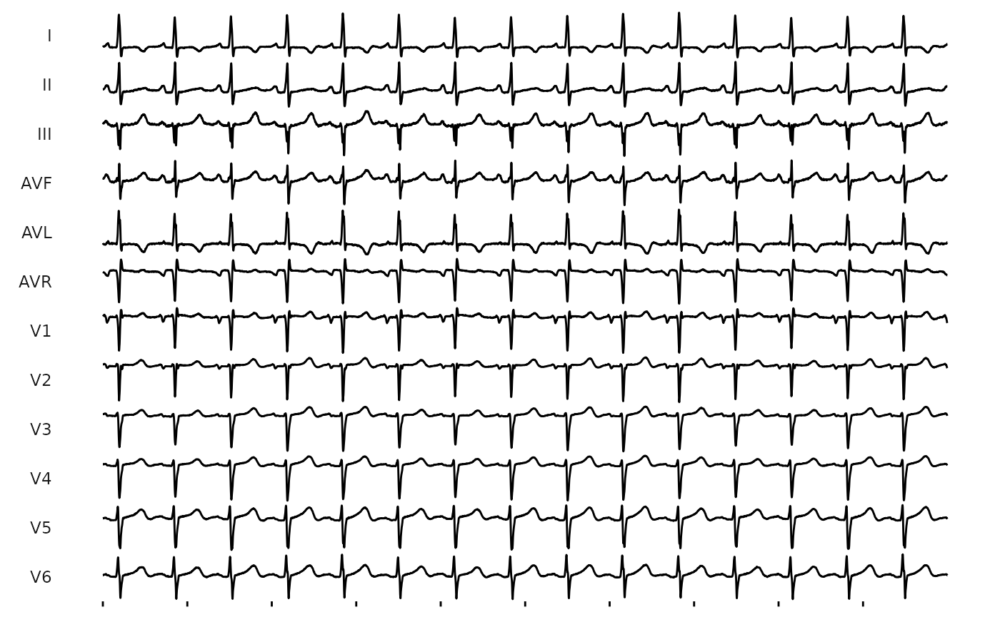
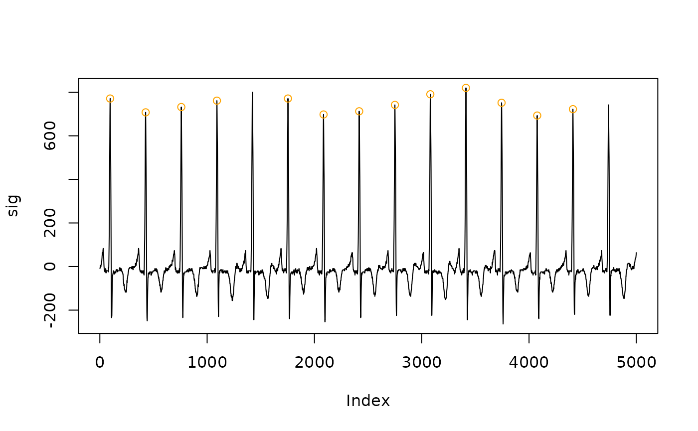

WFDB: An Introduction to the Waveform Database Software Package
Source:vignettes/wfdb-guide.Rmd
wfdb-guide.RmdThe package relies and is augmented heavily by the Waveform Database
(WFDB) software package, which is a well-documented and
well-developed ecosystem of software applications, primarily written in
C and C++ that manage the storage, reading,
writing, and interaction with electrical signal data. This software is
mostly external to the EGM package, and is used to
supplement and expand the software.
DISCLAIMER: The software required to use annotations
has not yet been re-written into a C backend for
R, and thus requires using a local installation of
WFDB for functionality. To build online vignettes and
articles, where the software package is not available, I only
demonstrate non-running examples.
Installation
To install the WFDB software in its traditional,
C-based format, I have found it easiest with teh
instructions from the Github source. The
installation instructions are relatively clear across multiple operating
systems.
WFDB is easiest to install on a Unix-based system, such
as Linux or MacOS. For Windows, I have found that using WSL2 is
the most consistent and supported way to utilize the software. When
hidden on WSL, the path must be specified explicitly using the
set_wfdb_path() function using the command from Powershell,
for example, to switch to a WSL command environment.
set_wfdb_path("wsl /usr/local/bin")Once this is in place, you should be able to work with
WFDB files directly from R without significant
overhead costs, while also gaining access to a variety of software
applications.
Annotations
The WFDB software package utilizes a binary format to store
annotations. Annotations are essentially markers or qualifiers of
specific components of a signal, specifying both the specific time or
position in the plot, and what channel the annotation refers to.
Annotations are polymorphic, and multiple can be applied to a single
signal dataset. The credit for this work goes directly to the original
software creators, as this is just a wrapper to allow for flexible
integration into R.
To begin, let’s take an example of a simple ECG dataset. This data is included in the package, and can be accessed as below.
fp <- system.file('extdata', 'muse-sinus.xml', package = 'EGM')
ecg <- read_muse(fp)
fig <- ggm(ecg) + theme_egm_light()
fig
We may have customized software, manual approaches, or machine
learning models that may label signal data. We can use the
annotation_table() function to create
WFDB-compatible annotations, updating both the
egm object and the written file. To trial this, let’s label
the peaks of the QRS complex from this 12-lead ECG.
- Create a quick, non-robust function for labeling QRS complex peaks.
The function
pracma::findpeaks()is quite good, but to avoid dependencies we are writing our own. - Evaluate the fit of the peaks to the dataset
- Place the annotations into a table, updating the
egmobject - Plot the results
# Let x = 10-second signal dataset
# We will apply this across the dataset
# This is an oversimplified approach.
find_peaks <- function(x,
threshold =
mean(x, na.rm = TRUE) + 2 * sd(x, na.rm = TRUE)
) {
# Ensure signal is "positive" for peak finding algorithm
x <- abs(x)
# Find the peaks
peaks <- which(diff(sign(diff(x))) == -2) + 1
# Filter the peaks
peaks <- peaks[x[peaks] > threshold]
# Return
peaks
}
# Create a signal dataset
dat <- extract_signal(ecg)
# Find the peaks
sig <- dat[["I"]]
pk_loc <- find_peaks(sig)
pk_val <- sig[pk_loc]
pks <- data.frame(x = pk_loc, y = pk_val)
# Plot them
plot(sig, type = "l")
points(x = pks$x, y = pks$y, col = "orange")
The result is not bad for a simple peak finder, but it lets us generate a small dataset of annotations that can then be used. Please see the additional vignettes for advanced annotation options, such as multichannel plots, and multichannel annotations. We can take a look under the hood at the annotation positions we generated. The relevant arguments, which are displayed below, include:
- annotator: name of annotation function or creator
- time: constructed from sample number and frequency
- sample: integer index of positions
- type: a single character describing the type
- subtype: a single character describing the type
- channel: which channel the data is mapped to
- number: an additional qualifier of the annotation type
# Find the peaks
raw_signal <- dat[["I"]]
peak_positions <- find_peaks(raw_signal)
peak_positions
#> [1] 96 427 759 1091 1753 2085 2417 2750 3080 3412 3744 4076 4409
# Annotations do not need to store the value at that time point however
# The annotation table function has the following arguments
args(annotation_table)
#> function (annotator = character(), time = character(), sample = integer(),
#> frequency = integer(), type = character(), subtype = character(),
#> channel = integer(), number = integer(), ...)
#> NULL
# We can fill this in as below using additional data from the original ECG
hea <- ecg$header
start <- attributes(hea)$record_line$start_time
hz <- attributes(hea)$record_line$frequency
ann <- annotation_table(
annotator = "our_pks",
sample = peak_positions,
type = "R",
frequency = hz,
channel = "I"
)
# Here are our annotations
ann
#> <annotation_table: 13 `our_pks` annotations>
#> time sample type subtype channel number
#> <char> <num> <char> <char> <char> <int>
#> 1: 00:00:00.192 96 R I 0
#> 2: 00:00:00.854 427 R I 0
#> 3: 00:00:01.518 759 R I 0
#> 4: 00:00:02.182 1091 R I 0
#> 5: 00:00:03.506 1753 R I 0
#> 6: 00:00:04.17 2085 R I 0
#> 7: 00:00:04.834 2417 R I 0
#> 8: 00:00:05.5 2750 R I 0
#> 9: 00:00:06.16 3080 R I 0
#> 10: 00:00:06.824 3412 R I 0
#> 11: 00:00:07.488 3744 R I 0
#> 12: 00:00:08.152 4076 R I 0
#> 13: 00:00:08.818 4409 R I 0
# Then, add this back to the original signal
ecg$annotation <- ann
ecg
#> <Electrical Signal>
#> -------------------
#> Recording Duration: 10 seconds
#> Recording frequency 500 hz
#> Number of channels: 12
#> Channel Names: I II III AVF AVL AVR V1 V2 V3 V4 V5 V6
#> Annotation: our_pks